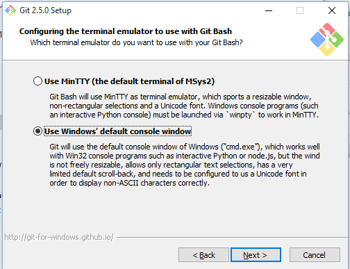
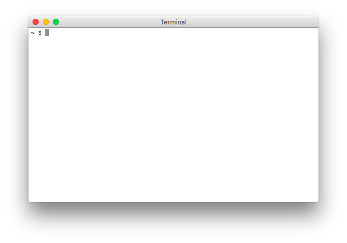
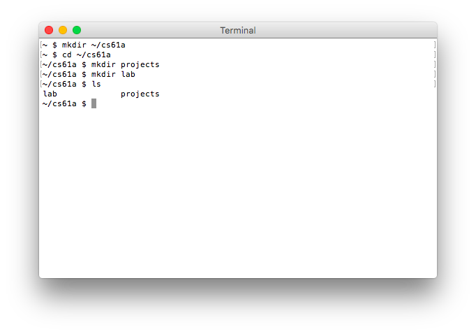

Lab 0: Setting up a productive workflow
Due at 11:59pm on Friday, 01/26/2018.
Starter Files
Download lab00.zip. Inside the archive, you will find starter files for the questions in this lab, along with a copy of the Ok autograder.
Submission
By the end of this lab, you should have submitted the lab with
python3 ok --submit. You may submit more than once before the
deadline; only the final submission will be graded.
Check that you have successfully submitted your code on
okpy.org.
Introduction
This lab explains how to use your own computer to complete assignments for CS 61A. If you are using a lab computer, most of the instructions are the same, except you won't have to install anything.
If you need any help at any time through the lab we are holding special office hours this week. You can also ask any questions next week in office hours or in lab.
Setup
Register for an account
These accounts allow you to use instructional machines in the CS department, which can be useful if you do not have regular access to a computer. They are not required if you do not plan on using the lab computers or printers.
Go to the EECS account site
to register for an instructional account. Login using your Berkeley CalNet ID
and click the Get a new account button in the row for CS 61A. Your username
will be of the form cs61a-xxx. Write down or download your account form so you
don't forget it!
Install a terminal
The terminal is a program that allows you to interact with your computer by entering commands. No matter what operating system you use (Windows, macOS, Linux), the terminal will be an essential tool for CS 61A.
macOS/Linux
If you're on a Mac or are using a form of Linux (such as Ubuntu), you already
have a program called Terminal or something similar on your computer. Open
that up and you should be good to go.
Windows
For Windows users, we recommend downloading a terminal called Git Bash.
You should be able to install Git Bash with most of the default configuration options, with one exception. In the Configuring the terminal emulator to use with Git Bash step, select the second option: Use Windows' default console window.
This is very important! If you do not select this option, your terminal will not work!

Install Python 3
Python 3 is the primary programming language used in this course. Use the appropriate download link and additional instructions below to install the Python 3 interpreter.
| OS | Download |
|---|---|
| Windows | Installer |
| macOS | Installer |
| Ubuntu | sudo apt-get install python3 |
| Other | Python3 Download |
macOS
Refer to this video for additional help on setting up Python (the video features a slightly older version of Python 3, but the steps are still the same).
You may need to right-click the download icon and select "Open". After installing please close and open your Terminal.
Windows
When installing, make sure to check the "Add Python 3.6 to PATH"
box, which will allow you to execute the python command from your terminal.

After installing please close and open your Terminal.
Install a text editor
The Python interpreter that you just installed allows you to run Python code. You will also need a text editor, where you will write Python code.
There are many editors out there, each with its own set of features. We find that Atom and Sublime Text 3 are popular choices among students, but you are free to use other text editors.
Note: Please, please, please do not use word processors such as Microsoft Word to edit programs.
For your reference, we've also written some guides on using popular text editors. After you're done with lab, you can take a look if you're interested:
Using the terminal
Let's check if everything was installed properly! First, open a new terminal window, if you haven't already.

When you first open your terminal, you will start in the home directory. The
home directory is represented by the ~ symbol.
Don't worry if your terminal window doesn't look exactly the same; the important part is that the text on the left-hand side of the
$has a~(tilde). That text might also have the name of your computer.
Python Interpreter
We can use the terminal to check if your Python 3 interpreter was installed correctly. Try the following command:
python3If the installation worked, you should see some text printed out about the
interpreter followed by >>> on its own line. This is where you can type in Python
code. Try typing some expressions you saw in lecture, or just play around to see
what happens! You can type exit() or Ctrl-D to return to your command line.
If you are using Windows and the
python3command doesn't work, try using justpythonorpy. If neither of those work, make sure you set up your PATH correctly as shown above. Ask for help if you get stuck!
Organizing your files
In this section, you will learn how to manage files using terminal commands.
Directories
The first command you'll use is ls. Try typing it in the terminal:
lsThe ls command lists all the files and folders in the current
directory. A directory is another name for a folder (such as the
Documents folder). Since you're in the home directory right now, you
should see the contents of your home directory.
Changing directories
To move into another directory, use the cd command. Let's try moving into your
Desktop directory. First, make sure you're in your home directory (check for the
~ on your command line) and use ls to see if the Desktop directory is present.
Try typing the following command into your terminal, which should move you into
that directory:
cd DesktopIf your desktop directory is not located within your home directory and you can't find it, ask a TA or a lab assistant for help.
There are a few ways to return to the home directory:
cd ..(two dots). The..means "the parent directory". In this case, the parent directory ofcs61ais your home directory, so you can usecd ..to go up one directory.cd ~(the tilde). Remember that~means home directory, so this command will always change to your home directory.cd(cdon its own). Typing justcdis a shortcut for typingcd ~.
You do not have to keep your files on your Desktop if you prefer otherwise. Where you keep your files locally will not affect your grade. Do whatever is easiest and most convenient for you!
Making new directories
The next command is called mkdir, which makes new
directories. Let's make a directory called cs61a on your Desktop to store
all of the assignments for this class:
mkdir cs61aA folder named cs61a will appear on your Desktop. You can verify this by
using the ls command again or by simply checking your Desktop.
At this point, let's create some more directories. First, make sure you are in
the ~/Desktop/cs61a directory. Then, create folders called projects and lab
inside of your cs61a folder:
cd ~/Desktop/cs61a
mkdir projects
mkdir labNow if you list the contents of the directory (using ls), you'll see two
folders, projects and lab.

Downloading the assignment
If you haven't already, download the zip archive, lab00.zip, which
contains all the files that you'll need for this lab. Once you've done that, let's
find the downloaded file. On most computers, lab00.zip is probably located in a
directory called Downloads in your home directory. Use the ls command to
check:
ls ~/DownloadsIf you don't see lab00.zip, ask a TA or lab assistant for help.
Extracting starter files
You must expand the zip archive before you can work on the lab files. Different operating systems and different browsers have different ways of unzipping. If you don't know how, you can search online.
Using a terminal, you can unzip the zip file from the command line. First,
cdinto the directory that contains the zip file:cd ~/DownloadsNow, run the
unzipcommand with the name of the zip file:unzip lab00.zipYou might also be able to unzip files without using the terminal by double clicking them in your OS's file explorer.
Once you unzip lab00.zip, you'll have a new folder called lab00 which
contains the following files (check it out with cd and ls):
lab00.py: The template file you'll be adding your code took: A program used to test and submit assignmentslab00.ok: A configuration file forok
Moving files
Move the lab files to the lab folder you created earlier:
mv ~/Downloads/lab00 ~/Desktop/cs61a/labThe mv command will move the ~/Downloads/lab00 folder
into the ~/Desktop/cs61a/lab folder.
Now, go to the lab00 folder that you just moved. Try using cd to navigate
your own way! If you get stuck, you can use the following command:
cd ~/Desktop/cs61a/lab/lab00Summary
Here is a summary of the commands we just went over for your reference:
ls: lists all files in the current directorycd <path to directory>: change into the specified directorymkdir <directory name>: make a new directory with the given namemv <source path> <destination path>: move the file at the given source to the given destination
Finally, you're ready to start editing the lab files! Don't worry if this seems complicated -- it will get much easier over time. Just keep practicing! You can also take a look at our UNIX tutorial for a more detailed explanation of terminal commands.
Doing the assignment
Understanding the question
Open up lab00.py in your text editor. You can type open . on MacOS or start .
on Windows to open the current directory in your Finder/File Explorer. Then
double click or right click to open the file in your text editor. You should
see something like this:
def twenty_eighteen():
"""Come up with the most creative expression that evaluates to 2018,
using only numbers and the +, *, and - operators.
>>> twenty_eighteen()
2018
"""
return ______
return (((2 + 0) - 1) * 8) * 8 * 8 * 4 - 30The lines in the triple-quotes """ are called a docstring, which is a
description of what the function is supposed to do. When writing code in 61A,
you should always read the docstring!
The lines that begin with >>> are called doctests. Recall that when using the
Python interpreter, you write Python expressions next to >>> and the output is
printed below that line. Doctests explain what the function does by showing actual
Python code: "if we input this Python code, what should the expected output be?"
In twenty_eighteen,
- The docstring tells you to "come up with the most creative expression that
evaluates to 2018," but that you can only use numbers and arithmetic operators
+(add),*(multiply), and-(subtract). - The doctest checks that the function call
twenty_eighteen()should return the number 2018.
You generally will not need to modify the docstring, unless you want to add your own tests! The only part of your assignments that you'll need to edit is the code.
Writing code
Once you understand what the question is asking, you're ready to start writing
code! You should replace the underscores in return ______ with an expression that
evaluates to 2018. What's the most creative expression you can come up with?
Don't forget to save your assignment after you edit it! You can save by navigating to File > Save or by pressing Command-S on MacOS or Ctrl-S on Windows.
Running tests
In CS 61A, we will use a program called ok to test our code. ok will be
included in every assignment in this class.
Back to the terminal! Make sure you are in the lab00 directory we created
earlier (remember, the cd command lets you change
directories).
In that directory, you can type ls to verify that there are the following
three files:
lab00.py: the starter file you just editedok: our testing programlab00.ok: a configuration file for Ok
Now, let's test our code to make sure it works. You can run ok with this
command:
python3 okThe first time you run Ok, you will be prompted for your bCourses email. Please follow these directions. We use this information to associate your code with you when grading.
Remember, if you are using Windows and the
python3command doesn't work, try using justpythonorpy. See the the install Python 3 section for more info and ask for help if you get stuck!
If you wrote your code correctly, you should see a successful test:
=====================================================================
Assignment: Lab 0
Ok, version v1.11.1
=====================================================================
~~~~~~~~~~~~~~~~~~~~~~~~~~~~~~~~~~~~~~~~~~~~~~~~~~~~~~~~~~~~~~~~~~~~~
Running tests
---------------------------------------------------------------------
Test summary
1 test cases passed! No cases failed.If you didn't pass the tests, ok will instead show you something like this:
---------------------------------------------------------------------
Doctests for twenty_eighteen
>>> from lab00 import *
>>> twenty_eighteen()
2013
# Error: expected
# 2018
# but got
# 2013
---------------------------------------------------------------------
Test summary
0 test cases passed before encountering first failed test caseFix your code in your text editor until the test passes.
Every time you run Ok, Ok will try to back up your work. Don't worry if it says that the "Connection timed out." We won't use your backups for grading.
While
okis the primary assignment "autograder" in CS 61A, you may find it useful at times to write some of your own tests in the form of doctests. Then, you can try them out using the-m doctestoption for Python).
Submit the assignment
Now that you have completed your first CS 61A assignment, it's time to turn it in. Note that it is not receive credit for an assignment simply by running the autograder per the last section. You must follow these steps to submit and get points!
Step 1: Submit with ok
In your terminal, make sure you are in the directory that contains ok. If
you aren't there yet, you can use this command:
cd ~/Desktop/cs61a/lab/lab00Next, use ok with the --submit option:
python3 ok --submitThis will prompt you for an email address if you haven't run Ok before. Please follow these directions. After that, Ok will print out a message like the following:
Submitting... 100% complete
Backup successful for user: ...
URL: https://okpy.org/...Step 2: Verify your submission
You can follow the link that Ok printed out to see your final submission, or you can go to okpy.org. You will be able to view your submission after you log in.
Make sure you log in with the same email you provided when running
okfrom your terminal!
You should see a successful submission for Lab 0.
Congratulations, you just submitted your first CS 61A assignment!
More information on Ok is available here. You can also use the
--helpflag:python3 ok --helpThis flag works just like it does for UNIX commands we used earlier.
Appendix: Using your class account
The following is optional. Please only read if you plan on using an instructional account.
Logging into your class account
From your laptop
Most of the work in this class can be done without logging into your account. However, there may be times when you'll find working from an instructional account to be easier.
Let's log in now. Open up your terminal and type in the following command:
ssh cs61a-?@ashby.cs.berkeley.eduwhere ? is replaced with the rest of your username.
If you're interested, here's an explanation of what the command does:
sshis a secure shell (i.e. terminal) that connects to other computers over a network.cs61a-?is the username on the remote computer.ashby.cs.berkeley.eduis the domain name of the remote computer. For our purposes it can be any of the servers that belong to Berkeley's CS department.
You can also watch this video for help.
The first time you attempt to ssh to a new server, the following message will
appear:
The authenticity of host 'ashby.cs.berkeley.edu' can't be established.
RSA key fingerprint is ...
Are you sure you want to continue connecting (yes/no)?Say yes. Your computer will remember the remote server, and won't ask you again.
Once you confirm, you will be prompted for your password. If you haven't changed your password yet, use the password you were assigned when you registered for your account.
When you type your password, nothing will show up! This is a security feature, not a bug. Continue typing and press enter to log in.
From an instructional machine
Most of our instructional computers use Ubuntu, a version of the Linux operating system. To log in, just find a lab computer and enter your username and password.
Once you log in, you'll want to open a terminal. On Ubuntu, you can open a
terminal with Ctrl-Alt-T.
Changing your password
The temporary password is not the easiest thing to remember. While still logged in, you can change your password by running this command and following the directions on the screen.
ssh updateRegistering your account
The first time you log in to your class account, your terminal may ask you some registration questions about the following:
- Last name
- First name
- Student ID
- Email (please use the same email as above!)
- Code name (we don't use this information, you can enter anything you want)
If your terminal doesn't prompt you for this information the first time you log in, you can type
registerto begin the process. You don't need to do this again if you've already registered before.
If you find errors (e.g. you misspelled your name), fix them immediately by running the command:
re-registerLogging out
Once you've registered your account and changed your password, you can
log out by pressing Ctrl-D, or with the command exit.
Appendix: Useful Python command line options
When running a Python file, you can use options on the command line to inspect your code further. Here are a few that will come in handy. If you want to learn more about other Python command-line options, take a look at the documentation.
Using no command-line options will run the code in the file you provide and return you to the command line.
python3 lab00.py-i: The-ioption runs your Python script, then opens an interactive session. In an interactive session, you run Python code line by line and get immediate feedback instead of running an entire file all at once. To exit, typeexit()into the interpreter prompt. You can also use the keyboard shortcutCtrl-Don Linux/Mac machines orCtrl-Z Enteron Windows.If you edit the Python file while running it interactively, you will need to exit and restart the interpreter in order for those changes to take effect.
python3 -i lab00.py-m doctest: Runs doctests in a particular file. Doctests are surrounded by triple quotes (""") within functions. Each test consists of>>>followed by some Python code and the expected output.python3 -m doctest lab00.py